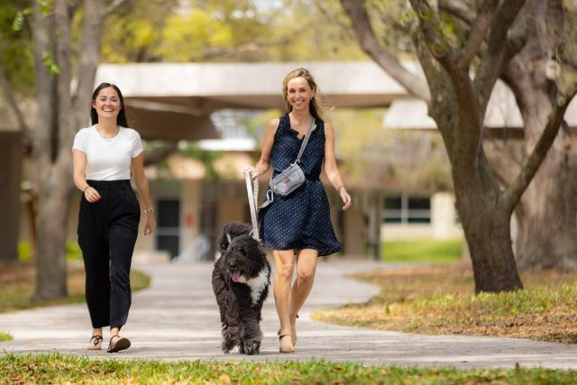

Om oss
Hej, vi heter Åsa och Lina, grundarna av Puppyccino! Vi har varit vänner sedan grundskolan och är bästa vänner i över 15år!
När vi växte upp tillsammans har vi alltid haft husdjur hemma, och våra hjärtan är alltid fyllda med kärlek från många typer av lurviga vänner, men hundar har fångat våra hjärtan mer än någon annan!
Vi vill att alla ska uppleva kärleken, vänligheten och det roliga med att vara nära hundar och dela tid med dem! Så det är därför vi skapade Puppyccino! Ett café där du kan slå dig ner, njuta av en god varm kopp kaffe (eller varför inte en kopp te?), en bakelse och umgås med våra favoritvänner med lurviga favoriter!
Vår personal är skickliga baristor och har kunskapen att skapa ditt favoritkafé i Stockholm! De älskar precis som vi hundar och tycker om att se deras ögon lysa upp när de hittar en ny vän att sitta med eller få husdjur av en besökare! Vi har blivit utsedda till "Årets Café" av International Dog Café Association tre år i rad! Det är något som vår personal och vi är mycket stolta över! Det inspirerar oss att hålla en hög standard och tjäna med stolthet och entusiasm!
Fråga gärna vår personal om du har några frågor du har om vårt café till personalen. Vi är alltid här för att lyssna på alla frågor du kan ha!
Personalen och vi hoppas att du gillar något som vi verkligen brinner för! Det är verkligen något speciellt!
Var en lurvig vän följare! Se de senaste nyheterna och andra roliga evenemang på Puppyccino!


Vanliga frågor
Fråga: Är era hundar vaccinerade?
Svar: Ja. Alla våra hundar vaccineras och genomgår regelbundet hälsokontroller av veterinärexperter.
Fråga: Var kommer hundarna ifrån?
Svar: Många av våra lurviga vänner kommer från hem där deras ägare utvecklar allergier, eller där deras ägare har gått bort.
Fråga: Vårt tar hundarna vägen efter att caféet stängt?
Svar: Café är en plats där du träffar våra lurviga vänner men efter att caféet stänger bor de på vårt shelter samma byggnad där de tas om hand av vår personal.
Fråga: Är barn välkomna i caféet?
Svar: Ja! Barn är välkomna om de åtföljs av någon som är över 18 år.
Fråga: Jag vill adoptera en hund. Var hittar jag information om det?
Svar: Vi har en sida på vår webbplats som heter "Adoptera" som har all information du behöver för att adoptera en av våra lurviga vänner!
Fråga: Kan jag mata hundarna på ert café?
Svar: Ja! Vi har en meny med både godsaker och dryck på vår meny! Varför inte prova en Doggy on the beach med en hundkaka, eller något annat på vår meny! Våra lurviga vänner njuter av alla godsaker och drycker som finns på våran meny!
Fråga: Vilka typer av hundar har du på ditt café?
Svar: Vi har många lurviga vänner här att umgås, mysa eller njuta av något med! Allt från valpar eller till och med lurviga vänner som är lite äldre att dela din tid med. Vi stöder starkt all tid du kan spendera med våra håriga vänner, de är alltid angelägna om att spendera kvalitetstid med en ny kompis!
Vår personal finns alltid här om du har fler frågor! Fråga gärna! De älskar att hjälpa till och göra ditt besök så roligt som möjligt!